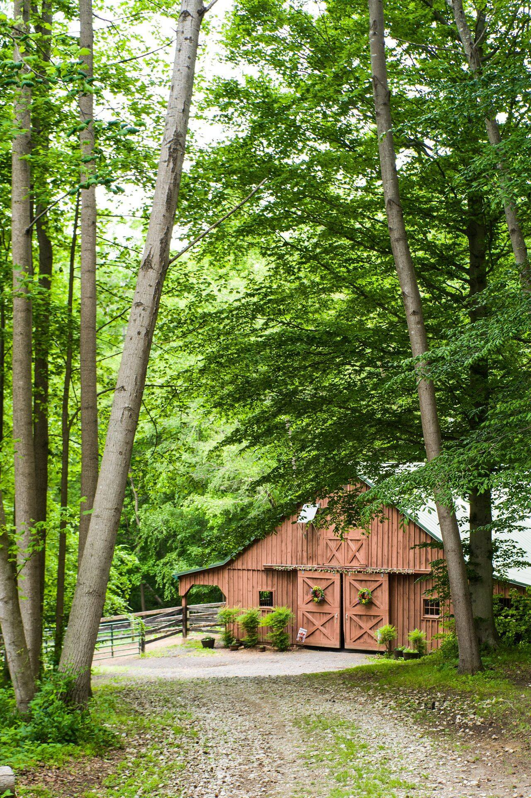

Photo Gallery of Solitude Stables in Harwood, MD
A Look Around the Farm
Step inside our quiet corner of Southern Maryland — the horses, the wooded trails, the open fields and the little moments that make a morning here feel like a world away.
Use the filters to explore, and tap any photo to view it full size.
More to come — we will add photographs of the riding ring once our new footing sand is in, plus fresh seasonal scenes from around the farm.
Come see it for yourself
Photographs only capture so much. Book a lesson or a guided trail ride for two, and experience the quiet beauty of Solitude Stables in Harwood, Maryland in person.
Have a question first? Email us at info@solitudestables.com.